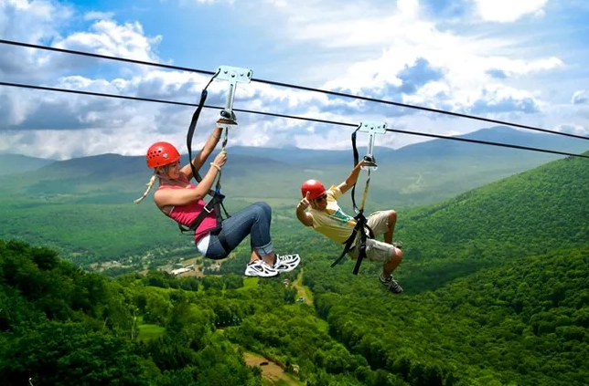
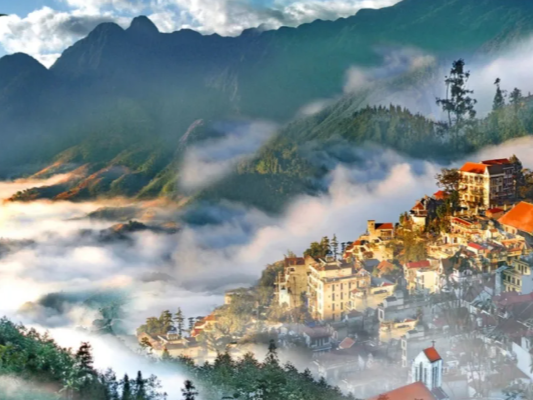
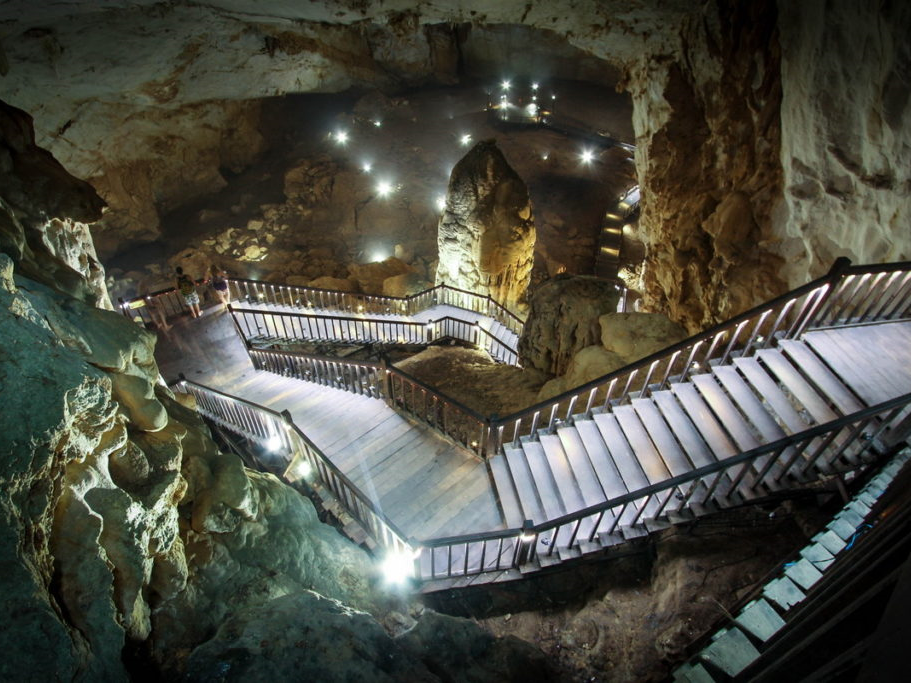
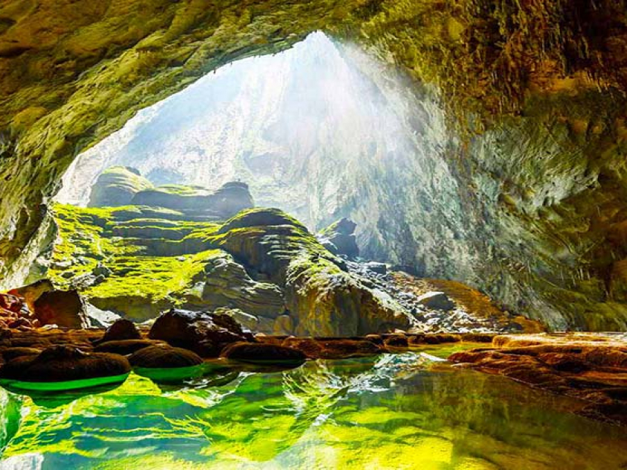
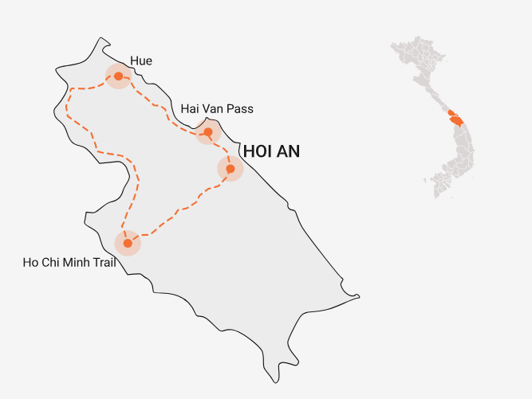
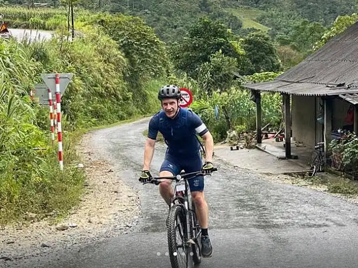
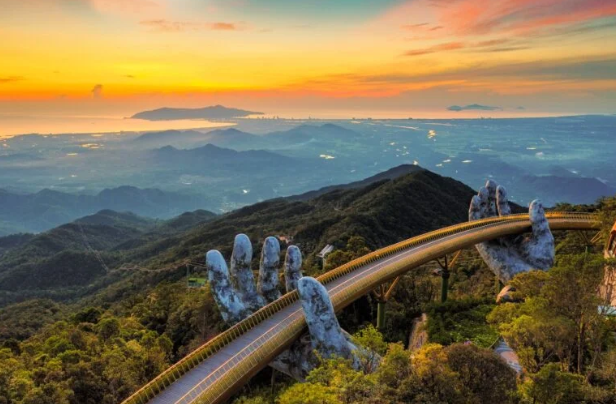
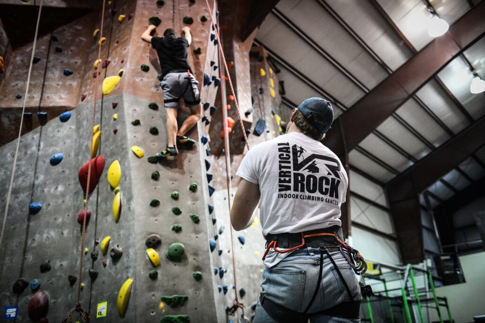
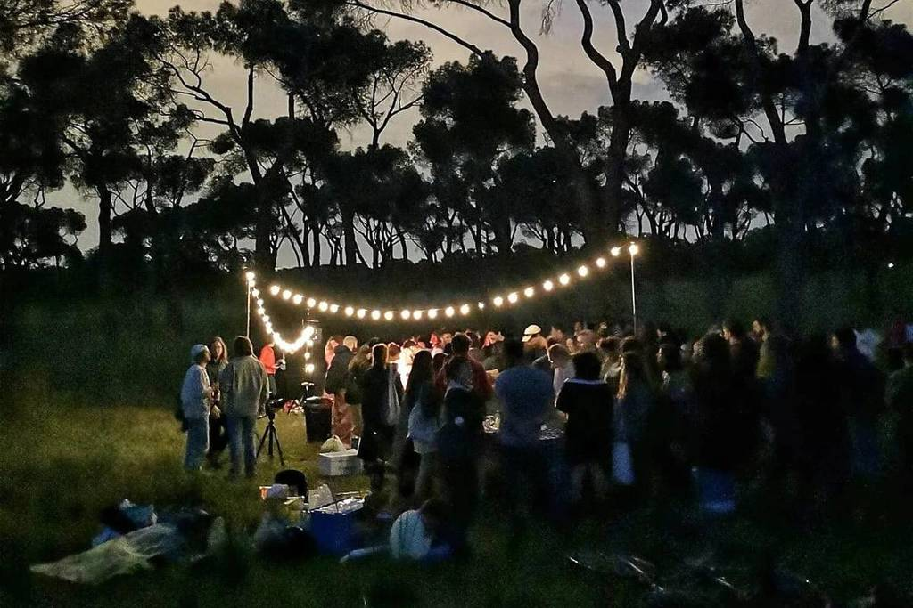

ADVENTURE TOURISM

Vietnam offers a wide range of adventure experiences, from mountain treks and cave explorations to water sports and extreme outdoor activities. Travelers can challenge themselves physically while connecting with local culture and nature.
1. Trekking and Mountain Expeditions
Vietnam’s rugged mountains offer breathtaking scenery and cultural encounters.
|
 |
| SAPA |
FANSIPAN MOUNTAIN |
NORTHERN HIGHLANDS |
| Trek through terraced rice fields, misty valleys, and remote villages of Hmong, Dao, and Tay ethnic groups. Homestays allow visitors to experience traditional lifestyles and cuisine. | Adventurers can hike challenging trails to reach Vietnam’s highest peak, enjoying panoramic views of the Hoang Lien Son mountain range. | Explore the dramatic landscapes of Ha Giang and the Dong Van Karst Plateau, known for winding mountain roads, deep valleys, and authentic ethnic communities. |
2. Caving and Underground Exploration
|
 |
 |
| Phong Nha-Ke Bang National Park |
Son Doong Cave |
| Offers a variety of caves for all levels, from Paradise Cave (dry, walkable) to Dark Cave (mud sliding, zip-lining, and swimming). | The largest cave in the world, featuring its own river, jungle, and ecosystem. Guided tours involve multi-day treks through underground passages. |
Adventure activities include spelunking, kayaking underground rivers, zip-lining inside caves, and exploring stalagmites and stalactites.
These expeditions combine adrenaline, discovery, and the chance to witness rare geological formations.
3. Cycling and Motorbike Expeditions
Exploring Vietnam on two wheels is a quintessential adventure experience.
|
 |
 |
|
Ho Chi Minh Trail and Hai Van Pass |
Northern and Central Highlands Cycling |
| Motorbike tours offer dramatic landscapes, from coastal roads to mountain passes. Riders navigate hairpin turns with sweeping views of the sea or highlands. | Tourers can ride through rice terraces, remote villages, and national parks at their own pace, connecting with nature and local communities. |
Routes vary from gentle day trips to multi-day expeditions requiring stamina and preparation, combining physical activity with cultural discovery.
5. Zip-lining, Rock Climbing, and Extreme Outdoor Activities
For thrill-seekers, Vietnam offers extreme sports in natural settings.
|
 |
 |
 |
|
Ba Na Hills and Phong Nha |
Rock Climbing |
Other Activities |
| Zip-line adventures over valleys, rivers, and cave entrances. | Ha Long Bay, Cat Ba Island, and northern karst mountains provide climbing routes for beginners to experts, with limestone cliffs over water or valleys. | Paragliding, canyoning, mountain biking, and even bungee jumping in Da Lat and other adventure hubs. |
These experiences combine adrenaline, breathtaking scenery, and physical challenge, catering to tourists who want a high-energy, immersive adventure.